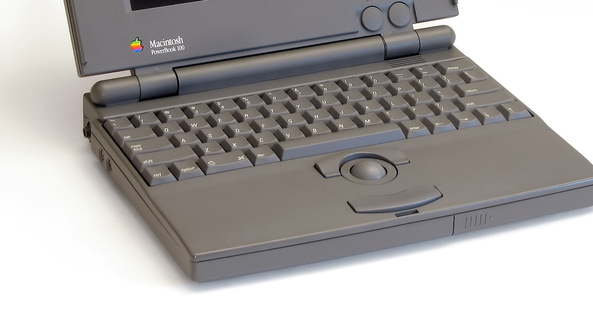
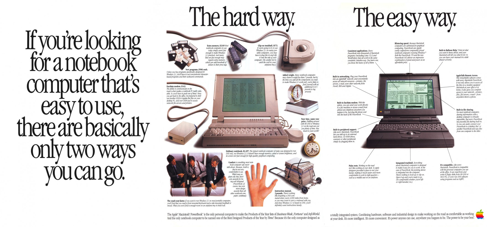

The Apple Macintosh PowerBook 100, considered by Apple and Sony, features a 16 MHz 68HC000 processor, 2 MB to 4 MB of RAM, and either a 20 MB or 40 MB hard drive compact portable case with 9.0 monochrome passive-matrix display and an external floppy disk drive. Essentially, the PowerBook 100 is a redesigned version of the Backlight Portable in a smaller case that only weighs 5 pounds, a full 10 pounds lighter than its predecessor.
The PowerBook 100 is a portable sub notebook personal computer designed and manufactured by Sony for Apple Computers and introduced on October 21, 1991, at the COMDEX computer expo in Las Vegas, Nevada. Priced at US$2,300, the PowerBook 100 was the low-end model of the first three simultaneously release PowerBooks. It’s CPU and overall speed closely resembled those of its predecessors, the Macintosh Portable. It had a Motorola 68000 processor at 16 MHz, 2-8 Mb of RAM, a 9-inch(23 cm) monochrome backlit liquid crystal display (LCD) with 640 x 400 pixel resolution, and the System 7.0.1 operating system. It did not have a built-in flop disk drive and was noted for its unique compact design that placed a trackball pointing device in front of the keyboard for ease.
Most of the PowerBook 100's internal components were based on its predecessor, the Macintosh Portable. It included a Motorola 68HC000 16 MHz processor, had 2 MB memory, no floppy disk drive, and cost approximately $2,300. An external floppy disk drive was available for $279. The dimensions of the PowerBook 100 were an improvement over the Portable. It was 8.5 inches (22 cm) deep, 11 inches (28 cm) wide, and 1.8 inches (4.6 cm) high, compared to the Portable, which was 14.83 inches (37.7 cm) deep, 15.25 inches (38.7 cm) wide and 4.05 inches (10.3 cm) high.[13] Another significant difference was the less expensive passive matrix display used instead of the sharper active matrix used on the Portable (and the 170). The PowerBook 100 included the System 7.0.1 operating system as standard, with support for all versions up to System 7.5.5. Apple, however, released System 6.0.8L, which allowed the PowerBook 100 to run System 6.It could also be used with some earlier System 6 versions, although Apple did not officially support this.
The PowerBook 100 had one external serial port, designed for use with a printer or any compatible RS-422 device. It was the first Macintosh to omit an external modem port, instead offering an optional built-in 2400 baud modem for communications. As a result, for the first time a user could not print directly and access AppleTalk or a faster external modem simultaneously, and devices such as advanced MIDI interfaces could not be used because they required the dedicated use of both ports. A third-party serial modem port could, however, be installed in the internal modem slot for consumers who needed traditional functions.
When the computer was not in use, contents of the memory were preserved as long as the main lead-acid battery remained charged. The PowerBook 100 Power Manager was an integrated circuit, usually placed on the logic board of a PowerBook, and was responsible for the power management of the computer. Identical to that of the Macintosh Portable, it controlled the display's backlight, hard drive spin-down, sleep and wake, battery charging, trackball control, and input/output (I/O). The 100 did add a new feature: 3.5 V batteries backed up permanent and expansion random access memory (RAM) when the PowerBook 100's battery was being replaced or when the 100 was otherwise temporarily removed from all power sources. This made it a perfect candidate for use with Apple's RAM disk to help increase battery life by accessing the hard disk less frequently, since the 100 was the only PowerBook that maintained the contents of RAM on shutdown in order to reduce startup time.
The PowerBook 100 was the first PowerBook to incorporate SCSI Disk Mode, which allowed it to be used as an external hard disk on a desktop Macintosh. This provided a convenient method for software to be installed onto the PowerBook or transferred to the desktop, without the need for the 100's optional floppy disk drive. A specialized SCSI cable with a unique connector was required, however, to use any SCSI device on the PowerBook series. A second dedicated cable was required for SCSI Disk Mode. This feature was unique to the 100 until Apple introduced new PowerBooks more than a year later.
There are two versions of the PowerBook 100's QWERTY layout keyboard: a domestic US version with 63 keys and an international ISO version with 64 keys. The caps lock key on the PowerBook 100 did not have a locking position or a lighted indicator of its status, and to compensate, the System 7 operating system software includes an extension file that causes an icon of the international caps lock symbol (⇪) to appear in the upper right-hand corner of the menu bar when Caps Lock is active. The internals of the PowerBook 100 were the basis of the Apple Wizzy Active Lifestyle Telephone prototype.
Both the PowerBook 140 and 170 were designed before the 100 by the Apple Industrial Design Group, from March 1990-February 1991. The 100's styling was based on those computers and represents the first improvements to the PowerBook line as Apple benefited from the lessons learned in developing the more powerful models' enclosure. The 100 was designed between September and December 1990, and retained the same design elements, which were a variation on the Snow White design language Apple had been using since 1984. Specifically, 2 mm (0.079 in) raised ridges spaced 10 mm (0.39 in) apart intended to tie it into the existing product line.
Apple approached Sony in late 1989 because it did not have enough engineers to handle the number of new products that were planned for delivery in 1991. Using a basic blueprint from Apple, including a list of chips and other components, and the Portable's architecture, the 100 was miniaturised and manufactured by Sony in San Diego, California, and Japan.Sony engineers had little experience building personal computers but nonetheless completed Apple's smallest and lightest machine in under 13 months, cancelling other projects and giving the PowerBook 100 top priority. Sony president Norio Ohga gave project manager Kihey Yamamoto permission to recruit engineers from any Sony division.
Robert Brunner, Apple's head of industrial design at the time, led the design team that developed the laptop, including its trackball and granite color.Brunner said he designed the PowerBook "so it would be as easy to use and carry as a regular book". The dark granite grey color set it apart from other notebook computers of the time and also from Apple's other products, which traditionally were beige or platinum grey. The trackball, another new design element, was placed in the middle of the computer, allowing the PowerBook to be easily operated by both left- and right-handed users. The designers were trying to create a fashion statement with the overall design of the laptop, which they felt made it a more personal accessory, like a wallet or briefcase. Brunner said: "It says something about the identity of the person who is carrying it".
Apple’s the chief executive officer John Sculley started the PowerBook project in 1990, allocating $1 million for marketing. Despite the small market budget, the new PowerBook line was a success, generating $1 billion revenue for Apple in its first year. Sony designed and manufactured PowerBook 100 in collaboration with the Apple Industrial Design Group, Apple’s internal design team. It was discontinued on September 3, 1992, and superseded by the PowerBook Duo series.. Since then it has been praised several times for its design; PC World named the PowerBook 100 the theft-greatest for tis design for all time on 2006, and US magazine Mobile PC chose the PowerBook 100 as the greaatest gadget of all time in 2005.
‘Source – website like wikipidea, macworld, macspecs, etc’